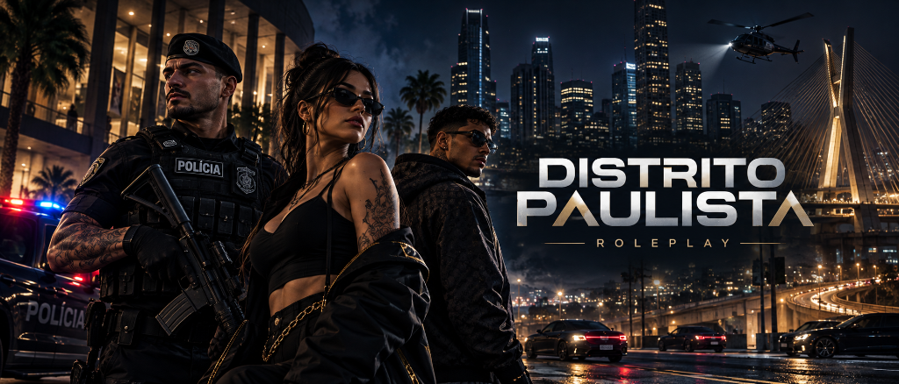

O ROLEPLAY QUE SÃO PAULO MERECIA
A maior experiência de interpretação urbana do Brasil. Uma economia realista, corporações policiais estruturadas, submundo do crime ativo e a Staff mais organizada do FiveM.
POR QUE CRIAMOS O DISTRITO PAULISTA?
O Distrito Paulista nasceu da união de um grupo de amigos que estava cansado de passar por diferentes cidades de RP e encontrar sempre os mesmos problemas: abuso de poder na staff, suporte ruim e uma gestão autoritária, que não valorizava o tempo e a dedicação de cada jogador.
Foi dessa insatisfação que surgiu a vontade de construir uma cidade com respeito, diálogo e compromisso com a comunidade. Um lugar onde os jogadores fossem ouvidos e cada história tivesse espaço para acontecer.
Nossa proposta é o Medium RP, com foco em interpretação, imersão e responsabilidade. Queremos histórias bem construídas, mas também uma experiência acolhedora e divertida.
Aqui, seu tempo tem valor, sua opinião tem espaço e sua história faz parte da nossa.

ESCOLHA SEU LADO EM SÃO PAULO
Cada corporação e organização no Distrito Paulista possui regimento próprio, cadeia de comando e procedimentos de Roleplay realistas.
Polícia Militar do Estado de São Paulo
Patrulhamento ostensivo, Força Tática, ROTA, ROCAM e RPM com procedimentos operacionais reais da corporação.
Diretrizes Operacionais:
- Uso Progressivo da Força: Verbalização primeiro, armamento proporcional e respeito ao Fair Play.
- Batalhões & Modalidades: Radiopatrulha (RPM), Força Tática, ROCAM (motos), Águia e Pelotões de Choque/ROTA.
- Sem Abuso de Mecânica: Proibido uso indiscriminado de spikes e batidas desleais durante perseguições.
Requisitos para Ingressar:
- Conhecimento pleno do Código Penal SP e conduta de respeito.
- Patrulhamento obrigatório em dupla (proibido patrulhar sozinho).
- Alistamento oficial divulgado no Discord da PMESP.
DA PERIFERIA AOS BAIRROS NOBRES
O Distrito Paulista foi desenhado com foco na experiência visual: sem texturas estouradas, sem menus poluídos e com um HUD minimalista para manter sua imersão em 100%.
TECLAS & COMANDOS ESSENCIAIS
Decore os comandos básicos para não ficar perdido no seu primeiro dia na cidade.
Contatos, transferências bancárias, chamados do SAMU e táxi.
Mochila, bolsos, itens rápidos e uso de equipamentos.
Centenas de poses, danças e interações corporais de RP.
Evita ejeção do para-brisa em colisões de alta velocidade.
Alarme e travas do carro próprio ou viatura autorizada.
Para comandos de conexão, reset de voz e diagnóstico.
Gesto corporal para indicar locais e direcionar atenção.
Modulação de frequência para corporações e equipes.